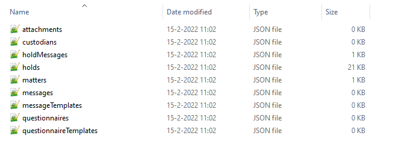
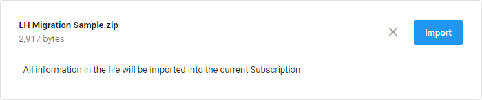
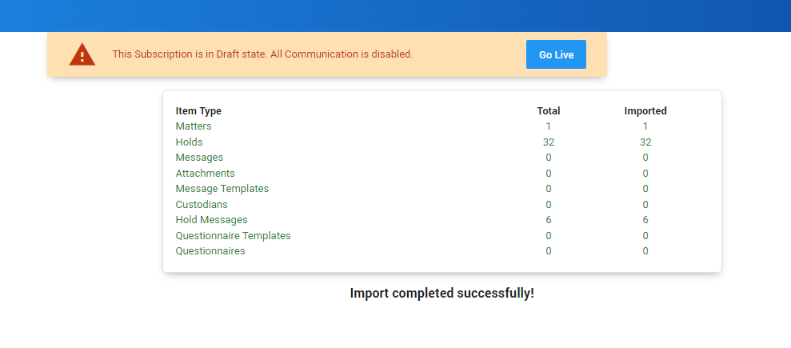
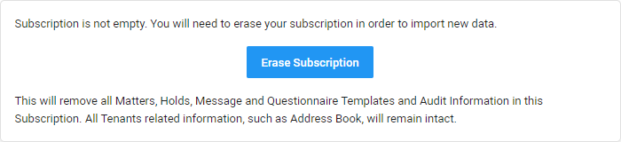
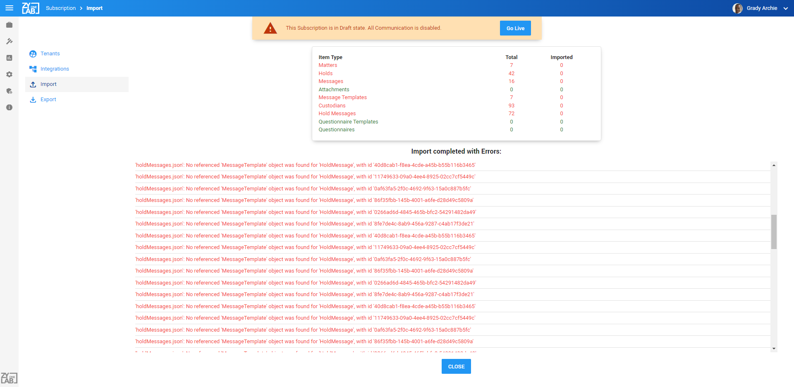

Note: Please note that the Import, Export and Go Live functionality is only available for users with the System Administrator Role and Global Hold Manager Role. Import and Erase are only available in Draft state.
Perform bulk imports of hold information from other systems.
|
|
Note: Please note that the Import, Export and Go Live functionality is only available for users with the System Administrator Role and Global Hold Manager Role. Import and Erase are only available in Draft state. |
Import allows you to upload a ZIP file with the data that you want to import.
Drop the ZIP file on the box displayed on the Import tab, or click the box and search for & select the ZIP file via the File Explorer.

The data should be stored in a JSON format. You'll have a JSON file for each record that you want to import.

Select Import.

After import, ZyLAB ONE Legal Hold will validate the import and add the records to your subscription. A summary of the result of the import will be displayed on screen.
If the import succeeded without error, then you can verify the records in your subscription and perform a quality control. When you’re satisfied with the current records in your subscription you can press the Go Live button. This can only be done by a user with System Administrator and Global Hold Manager privileges.
After you Go Live, the subscription will be active and your subscription will resume all scheduled communications according to the information in your Holds. Note that at any time you can send messages to custodians by using the standard communication functionality. After you Go Live, it is not possible to return to a Draft state.
Click the blue Close button at the bottom of the screen.

|
|
Note: You cannot import additional data after an import action. First erase the subscription, then import again. |
If the Import contains errors, you can review the errors and modify your import files, then import again (you can’t import if your subscription already contains data).
Click the blue Close button at the bottom of the screen. Nothing will be imported and you can try again with modified import files.
